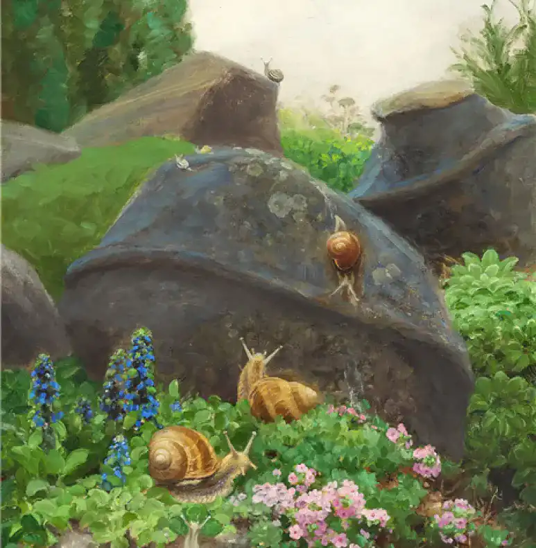

<h1>WORN OUT</h1>
<hr class="hracc">

<legend>PLAIN WHEN IT GETS DARK de Giovanni SEGANTINI</legend>
<hr class="hracc_3">
<p><li>Titre original: Ebene Beim Eindunkeln</li>
<li>Date: 1885</li>
<li>Style: Symbolism, Divisionnisme</li>
<li>Genre: Marine, cloudscape</li>
<li>Media: oil, canvas</li>
<li>Dimensions: 100 x 80 cm</li></p>